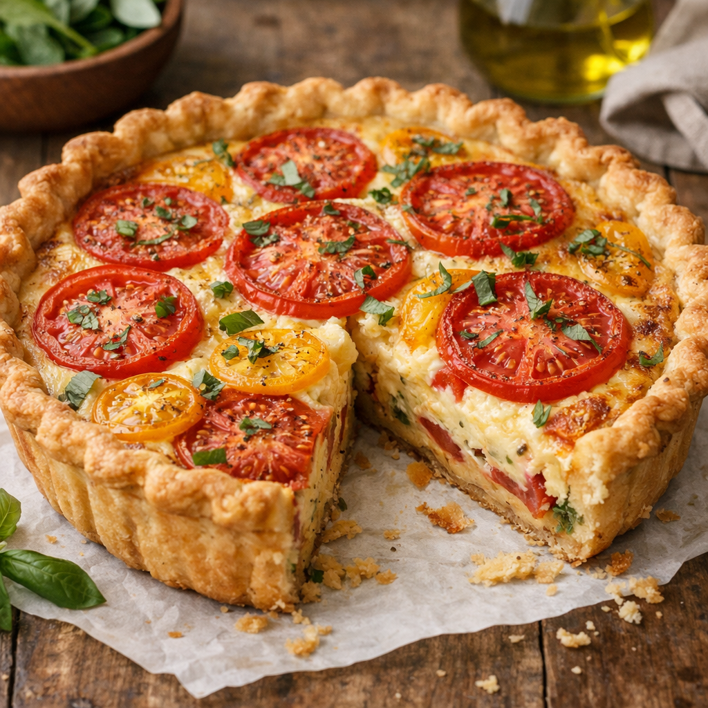

Home
Quiche Recipe

Description
This is the recipe for a homemade quiche, inspired by the one Harry's American wife made on a Netflix show.
The ingredients are;
- 5 Eggs
- 118.3 ml Heavy Cream
- 118.3 ml Milk
- Pinch of Salt
- 1 Large Tomato, sliced
- Pre-prepared Pastry Shell Crust
- Fresh Basil Leaves, to serve
The Steps;
- Preheat oven to 180 degrees celcius.
- Whisk 5 eggs with cream and milk. Add a pinch of salt.
- Pour into a pre-prepared pastry shell.
- Add the sliced tomato.
- Bake for 40 minutes.
- Add fresh basil leaves.
- Serve.